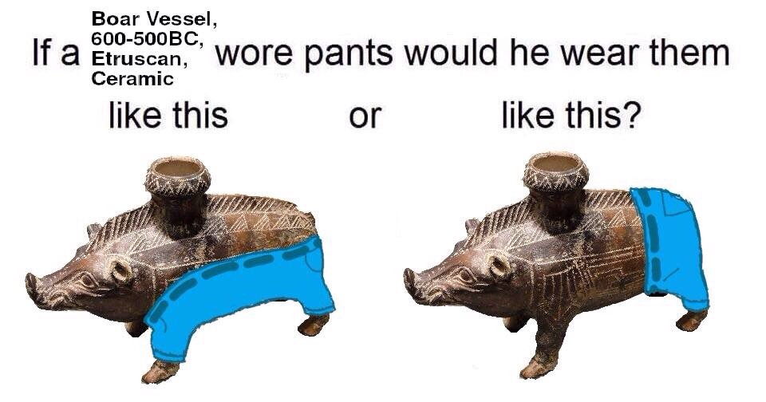

Un buen hombre disfrutando de la visión de Boar vessel 600-500 bc etruscan ceramic
Imagen Original
La pregunta que se lleva haciendo desde que supimos de esta pieza. ¿Como llevaría pantalones?
Imagen Original
El objeto se supone que servía para almacenar aceite ceremonial
Imagen OriginalMomento Etrusco
Imagen Original